정문 광장
아카데미의 얼굴이 되는 구역. 입학생, 교관, 행정 차량이 지나가는 곳이다. 슈테른의 질서와 분위기를 보여주는 대표 구역이다.
01. World
칠흑 같은 우주에 떠 있는 거대한 방주, 궤도 도시. 그 중심부를 감싸는 비교적 평화로운 행정·교육 구역부터 외계 위협과 직접 맞닿은 서늘한 방벽권까지, 도시는 여러 겹의 궤도로 철저히 나뉘어 있습니다. 슈테른은 이 위태로운 요새 속에서 내일을 지켜내기 위해 세워진 특수 아카데미입니다.
아카데미의 얼굴이 되는 구역. 입학생, 교관, 행정 차량이 지나가는 곳이다. 슈테른의 질서와 분위기를 보여주는 대표 구역이다.
강의실, 기숙사, 식당, 동아리방이 모인 구역. 학생들이 가장 오래 머무는 생활 공간이다. 경보가 울리면 가장 먼저 통제된다.
도시 바깥과 가장 가까운 구역. 감시망과 출격 설비가 모여 있다. 외계 위협이 확인되면 출격 준비가 이곳에서 시작된다.
도시는 여러 궤도로 나뉜다. 안쪽에는 행정 구역과 아카데미 구역이 있다. 바깥쪽에는 시민 생활 구역, 산업 구역, 방벽 구역이 이어진다.
같은 궤도 안에서는 순환선과 트램을 이용한다. 다른 궤도로 이동할 때는 환승항과 발사선, 포착 레일, 감속장, 도킹 장치를 거친다. 안쪽 구역일수록 신분 확인이 엄격하다.
방벽은 도시를 지키는 외곽 방어선이다. 감시, 격리, 출격, 잔해 처리의 기준이 된다. 균열이 발견되면 대피 명령과 출격 선발이 먼저 진행된다.
도시의 동력과 생명 유지, 방벽 안정에 관여하는 중심 구조. 직접 접근은 엄격히 제한된다.
행정, 방위 지휘, 특례 심사, 코어 접근 통제를 맡는 구역. 주요 명령과 문서가 이곳에서 나온다.
슈테른, 메종 뤼미에르, 아카데미아 솔라리스가 있는 교육 구역. 적성자 선발, 연구, 훈련이 진행된다.
주거지, 상점, 병원, 일반 학교가 있는 생활권. 학생들의 가족과 과거가 남아 있는 구역이다.
식량 생산, 공장, 정비, 에너지 변환, 재순환 시설이 모인 구역. 도시의 일상 유지에 필요한 노동이 모인다.
외곽 방벽, 감시망, 요격 시설, 출격 게이트가 있는 구역. 외계 위협과 가장 먼저 맞닿는다.
02. Academy
아카데미 슈테른은 소년소녀들을 품은 울타리인 동시에, 이들을 전장으로 내보내는 전시 관리기관입니다. 왁자지껄한 동아리 활동과 설레는 축제 속에서도, 언제 울릴지 모르는 경보 방송 하나면 모든 일상이 멈춥니다. 학생들은 이곳에서 우정을 나누며 지식을 쌓아가는 한편, 자신의 '공명 적성'과 '출격 가치'를 냉혹하게 평가받습니다.
강당 집합, 개회 방송, 슈테른 시스템 안내, 금색 회중시계 배부가 진행된다. 이후 기숙사와 첫 시간표를 받는다. 생활 규칙과 단말 사용 제한도 이때 안내된다.
성적만 보는 곳이 아니다. 공명 안정성, 적성, 부상 상태, 이전 출격 기록을 함께 본다. 가족의 거주권과 과거 기록도 심사 자료에 포함될 수 있다.
행정 명령, 징계, 승인, 보고가 모이는 건물. 학생 관련 처분과 기록이 이곳에서 정리된다.
일반 수업과 전공 안내, 기초 평가가 이루어지는 건물. 경보가 내려오면 수업이 중단된다.
법학, 행정, 문학, 사회과학, 군사, 농업, 공학, 의학, 예술, 이학 실습이 이루어지는 건물이다.
후보생은 주로 4인실을 사용한다. 정식 페어가 된 학생은 개인실이나 커플실을 배정받을 수 있다.
적성, 공명률, 감각 공유 내성, 출력 안정도를 측정하는 구역. 페어 배정과 출격 심사에 쓰인다.
학생이 방벽권으로 이동할 때 쓰는 전용 시설. 일반 이동 시설이 아니라 출격용 동선이다.
03. Institutions
학생들의 운명은 슈테른 안에서만 결정되지 않습니다. 궤도 이동 권한을 쥔 최상위 정부, 피비린내 나는 전장을 통제하는 방벽군, 그리고 권리와 예외를 저울질하는 특례심사국까지. 거주권과 생사를 쥐고 흔드는 톱니바퀴 같은 기관들이 학생들의 일상과 출격의 무게를 빈틈없이 옭아매고 있습니다.
적성자 선발, 공명 평가, 교육, 페어 배정을 맡는 전시 아카데미. 금색 회중시계는 학생의 증표다.
예법과 사교 교육으로 알려진 여학원. 가문 인맥과 공식 행사에서 슈테른과 접점이 생긴다.
연구 중심 아카데미. 공명, 장치, 평가 자료를 분석한다. 연구 시연과 기술 지원을 맡는다.
행정, 방위, 코어 통제를 맡는 최상위 기관. 궤도 이동 권한, 가족 거주권, 정책 특례에 관여한다.
전공점 사용, 졸업권, 정책 특례, 궤도 이동을 심사하는 기관. 모든 요청은 서류와 번호로 처리된다.
방벽과 외곽 전장을 지키는 군 조직. 학생 페어가 출격할 때 후송로, 방위선, 요격 시설을 지원한다.
04. Resonance
'공명'은 두 사람의 영혼과 감각을 잇는 보이지 않는 끈이자, 아카데미가 출격 페어를 선발하는 가장 절대적인 척도입니다. 이는 단순한 호감이나 전투력을 넘어, 서로의 감각을 견뎌내는 내성과 출력의 안정을 요구합니다. 맹목적인 신뢰는 강한 무기가 되지만, 때로는 서로를 갉아먹는 치명적인 '과공명'의 늪으로 이끌기도 합니다.
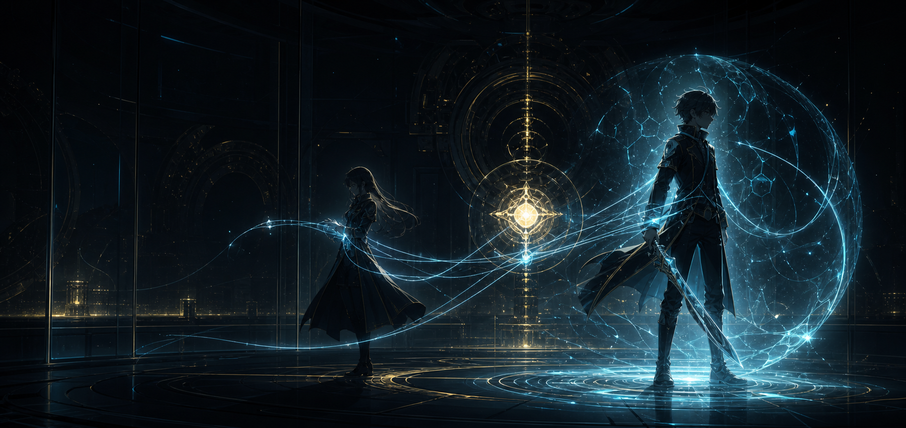
전장에 직접 나서는 역할. 공격, 방어, 돌파, 결정타를 맡는다. 반휘터의 보조가 안정되어야 제 기능을 낸다.
머리 크기의 슈테른케른과 공명하는 역할. 코어 출력을 전장으로 연결한다. 가동 중에는 눈을 감고 장치에 집중한다.
슈테른트레거와 반휘터가 1대1로 묶인 출격 페어. 공명률과 역할 적성이 맞으면 가매칭을 거쳐 정식 페어가 된다.
무장 형성과 방어 보조가 불안정하다. 명령 전달도 자주 어긋난다.
기본적인 작동은 가능하다. 실패와 지연이 많아 훈련과 재검사가 필요하다.
대부분의 작동이 안정된다. 이 단계부터 출격 후보로 검토된다.
출력과 반응 속도가 높다. 대신 감각 공유와 의존 문제가 강해진다.
안정 범위를 넘은 상태. 감각 혼선, 통증 공유, 기억 역류, 폭주 위험이 생긴다.
공명률은 단순한 호감도 표가 아니다. 신뢰, 이해, 의존, 집착이 모두 영향을 준다. 안정적인 신뢰는 힘이 되지만, 지나친 의존은 과공명으로 이어진다.
공명이 낮은 학생은 일반 생활과 기초 과정에 머문다. 출격에는 안정적인 공명이 필요하다. 기준에 닿지 못한 조합은 관찰 유예, 재검사, 일반 졸업 과정으로 나뉜다.
05. Alert & Sortie
외계의 위협이 관측되는 순간, 단말기에 떨어지는 붉은 경보가 평화로운 교정에 정적을 부릅니다. 수업은 즉각 중단되고 생사를 넘나들 '출격 후보' 명단이 갱신됩니다. 전장으로 향하기 전 주어지는 며칠간의 짧은 휴가. 그것은 달콤한 보상이 아니라, 어쩌면 마지막이 될지도 모를 서늘한 작별의 시간입니다.
관제실 예보가 전교 방송과 단말 공지로 내려온다. 이 신호는 전투 개시가 아니라 출격 준비 시작을 뜻한다. 수업은 멈추고 후보 호출이 이어진다.
후보는 공명 안정성, 적성, 부상 상태, 이전 출격 기록, 특별 신청 여부로 다시 확인된다. 명단은 게시판과 단말, 교관 호출로 전달된다. 최종 조합은 마지막에 바뀔 수 있다.
출격 예정자는 며칠 동안 휴가를 받는다. 보상보다는 마지막 정리와 휴식에 가까운 시간이다. 이 기간에 가족 연락, 의료 점검, 개인 정리가 이루어진다.
생환한 학생은 전공점을 받는다. 전공점은 휴가, 의료 우선권, 거주권 보호, 시민권 회복, 기록 정리 신청에 쓰인다. 큰 신청일수록 더 많은 점수와 심사가 필요하다.
06. Sternkern
반휘터가 자신의 의식을 연결해 막대한 코어의 에너지를 이끌어내는 심장부, 슈테른케른. 아카데미가 철저히 통제하는 이 조그만 중계 장치는 전장의 슈테른트레거에게 강대한 무장과 방패를 부여합니다. 하지만 가동 중 무방비 상태가 되는 반휘터에게는, 한순간의 집중력 흐트러짐이 끔찍한 공명 역류로 돌아오는 양날의 검이기도 합니다.
슈테른케른은 코어 출력을 그대로 쓰지 않는다. 반휘터의 공명을 거쳐 출력을 안정시키고, 방벽권 공명장으로 보낸다. 전달된 출력은 슈테른트레거의 전투 의장, 무기, 방어막, 보조 장치로 변환된다.
슈테른케른은 개인 장비가 아니다. 슈테른이 관리하는 장치이며, 정해진 절차 없이는 사용할 수 없다. 손상될 경우 공명 역류가 발생하고 공명률이 급격히 오른다.
반휘터가 장치와 공명해야 한다. 출격에는 페어 공명률 70% 이상이 필요하다.
반휘터는 눈을 감고 장치에 집중한다. 이때 신체적으로 무방비 상태가 된다.
반휘터는 슈테른트레거의 시각, 후각, 청각을 공유한다. 공명률 70% 이상부터는 의도적 사고 공유도 가능하다.
집중이 풀리면 공명은 해제된다. 장치 손상은 공명 역류와 공명률 폭증으로 이어진다.
07. Life
치열한 훈련과 무거운 책무 속에서도 학생들의 일상은 흘러갑니다. 중간고사와 기말고사, 시끌벅적한 동아리 준비와 반짝이는 축제의 밤. 하지만 이 모든 찬란한 순간들은 언제 떨어질지 모르는 외계 경보 아래 아슬아슬하게 유지되는 '허락된 평화'에 불과합니다.
연 2학기제다. 1학기는 3월부터 6월까지, 2학기는 9월부터 12월까지다.
정규 수업, 과제, 기초 훈련, 평가가 진행된다. 8주차에는 중간고사, 15주차에는 기말고사가 있다.
학생회가 등록, 예산, 공간 배정을 맡는다. 전투 보조, 공학 제작, 문예, 음악, 공연, 원예, 신문 동아리가 있다.
슈테른제, 기숙사 교류회, 동아리 공연회, 생환축하회, 추모등화제가 있다.
오전과 오후에는 수업이 있다. 저녁과 밤에는 자습, 동아리, 상담, 보충 훈련이 이어진다.
주말은 점호를 제외하면 비교적 자유롭다. 방학에는 귀가, 외박, 특별 휴가, 보충 훈련, 재평가가 있다.
08. Threat
우주 너머에서 몰려오는 정체불명의 위협. 이들은 언어도, 지휘 체계도, 심지어 뚜렷한 악의조차 없는 기괴한 재앙입니다. 그저 코어의 에너지와 슈테른케른이 뿜어내는 공명파를 향해 맹렬히 쇄도할 뿐입니다. 이 차갑고 텅 빈 적들을 막아내기 위해, 오늘도 학생들은 파편이 흩날리는 전장으로 몸을 던집니다.
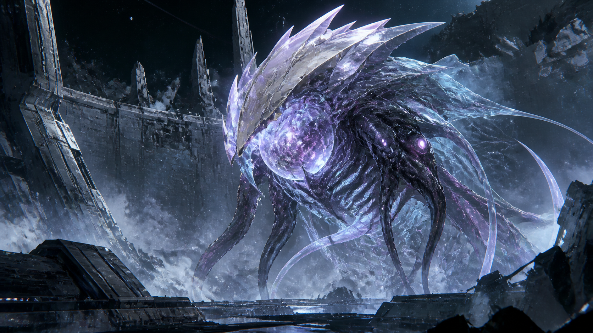
열, 전자기, 공명파, 방벽 균열, 생체 전류에 반응한다. 규칙적인 진동에도 민감하다.
규소질 갑피, 젤섬유, 공명 간섭 기관을 지닌다. 핵심낭을 파괴해야 확실하게 제압된다.
압각, 침투, 군집, 공명 기생, 굴착형이 있다. 방벽군이 기록을 위해 붙인 임시 분류다.
도시 안에서는 오래 버티지 못한다. 잔류 흔적은 악몽, 감각 역류, 공명 잡음을 일으킨다. 전투 후 격리와 인계가 필요하다.
관성 파편, 폐방벽재, 유리화 먼지, 얼어붙은 냉각수가 남는 환경이다. 거리감과 통신 상태가 자주 흔들린다.
전투 뒤 잔해는 24시간 격리한다. 72시간 뒤 방벽군에 인계한다. 민간 반입과 재가공은 금지다.
핵심낭 확인 전에는 승리 판정을 내리지 않는다. 단독 추격도 금지다.
방위조는 후송로와 방벽선을 맡는다. 주공조는 핵심 섬멸을 맡는다. 두 조가 나뉘어 움직인다.
09. People
궤도 도시와 아카데미의 톱니바퀴를 굴리는 자들, 그리고 그 체계 속에 놓인 이들의 기록입니다. 각자가 품은 비밀과 갈등, 외면할 수 없는 상처와 저마다의 신념이 이 차가운 궤도 위 세계관에 뜨거운 숨결을 불어넣습니다.
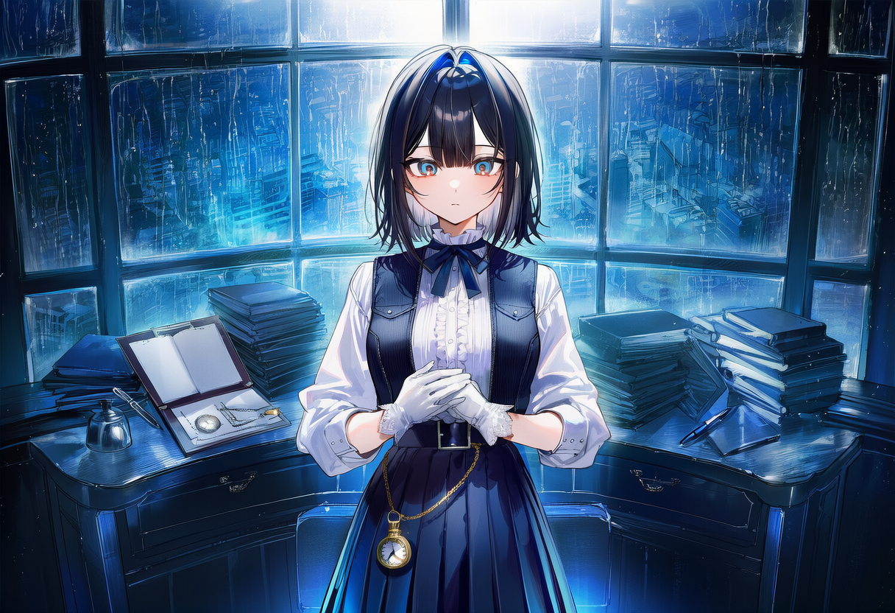
학생회장 · 법학 전공 · 징계 재심 담당
슈테른의 질서를 수호하는 학생회장. 흠잡을 데 없는 제복 아래, 차가운 규칙으로부터 학생들을 지켜내겠다는 무거운 책임을 홀로 삼키고 있습니다.
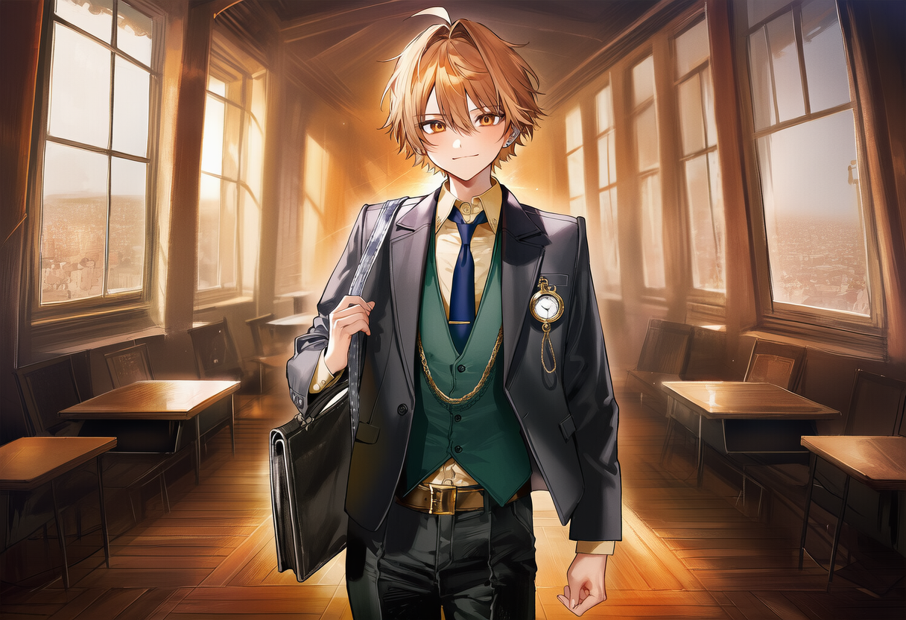
학생회 부회장 · 행정 예산 담당
예산 장부를 쥐고 아카데미의 살림을 책임지는 중재자. 섣부른 선의가 결국 목을 조르는 빚으로 돌아오는 궤도 도시의 생리를 누구보다 잘 압니다.
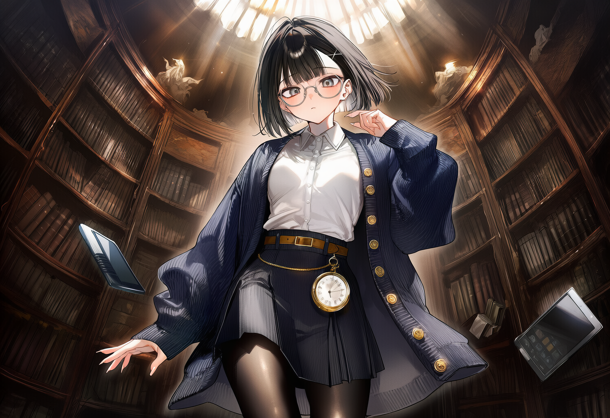
학생회 서기 · 기록실 회의록 담당
묵묵히 활자를 새기는 기록실의 서기. 삭제된 회의록과 사라진 이름들 사이에서, 왜곡되지 않은 온전한 진실을 남기기 위해 단말기를 놓지 않습니다.
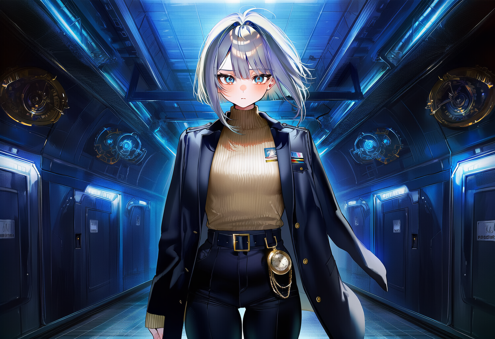
사회과학 전공 · 방벽권 피난 기록 조사
방벽권 피난의 상흔을 안고 있는 학생. 목 끝까지 잠근 외투처럼 타인과의 거리를 두며, 낙관적인 안전 방송을 결코 믿지 않습니다.
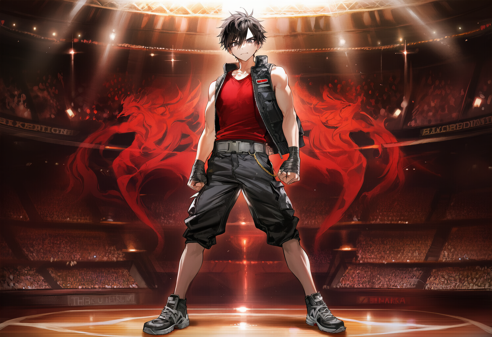
군사 전공 · 체육 훈련 특기생
승부와 성과로 자신의 가치를 증명하려는 군사 전공 학생. 땀에 젖은 훈련복과 감싸 쥔 손목은 살아남기 위해 발둥친 치열한 흔적입니다.
농업 전공 · 공동식당과 식량 재배 담당
언제 무너질지 모르는 궤도 도시에서 꿋꿋하게 식물과 일상을 돌보는 농업 전공 학생. 화분 하나, 식사 한 끼의 온기가 가진 힘을 믿습니다.
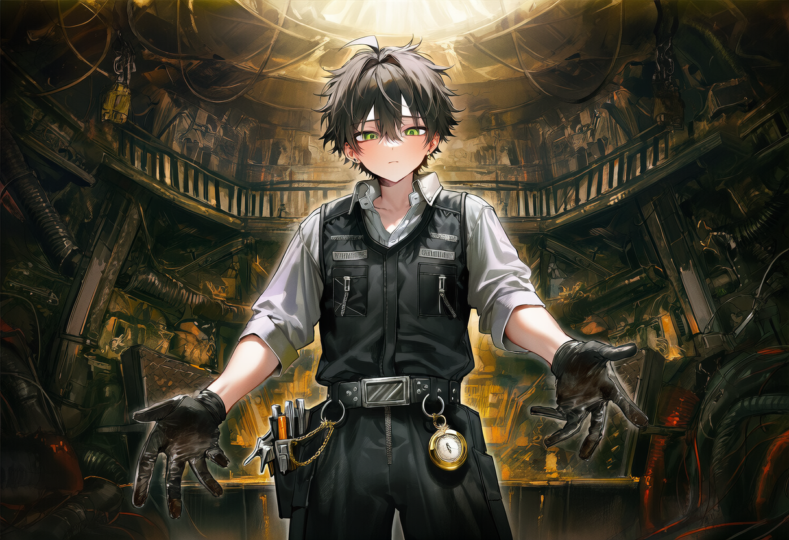
공학 전공 · 정비와 폐기장 부품 담당
기름 묻은 손으로 망가진 것들을 고쳐내는 공학 전공 학생. 쓸모를 다해 버려지는 것들에 대한 묘한 연민으로, 고장의 원인을 끝까지 파헤칩니다.
의학 전공 · 응급 분류 실습생
누구를 살릴지 정해야 하는 응급 분류의 십자가를 진 의학 전공 학생. 핏자국 묻은 흰 손수건처럼 지울 수 없는 죄책감을 안고 있습니다.
문학 전공 · 학내 신문과 제보 담당
가벼운 농담 속에 날카로운 진실을 숨겨 나르는 문학 전공 학생. 모두가 쉬쉬하는 아카데미의 뒷이야기를 쫓으며 제보자의 그림자를 덮어줍니다.
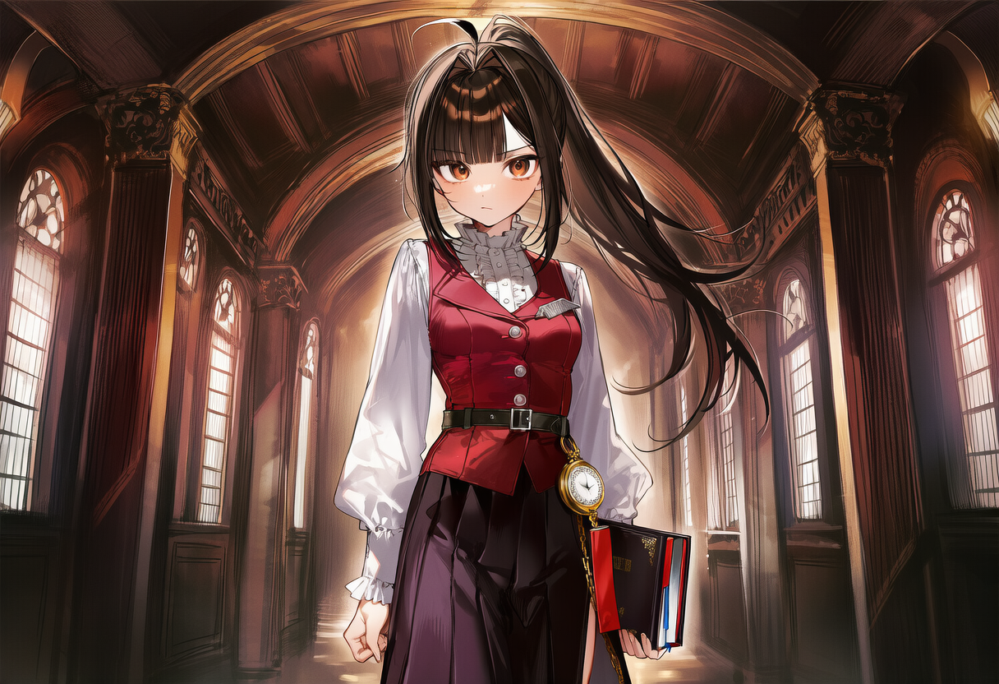
법학 전공 · 학생 변론과 징계 대응
부당한 권위와 징계에 맞서 방패를 자처하는 법학 전공 학생. 빈틈없는 복식만큼이나 꺾이지 않는 신념으로 학생들의 권리를 변론합니다.
예술 전공 · 공연 무대 실연 담당
무대 위의 조명이 꺼진 뒤에도 완벽을 연기해야 하는 예술 전공 학생. 화려한 복식 뒤에는 누군가의 대역이라는 쓰라린 꼬리표가 숨어 있습니다.
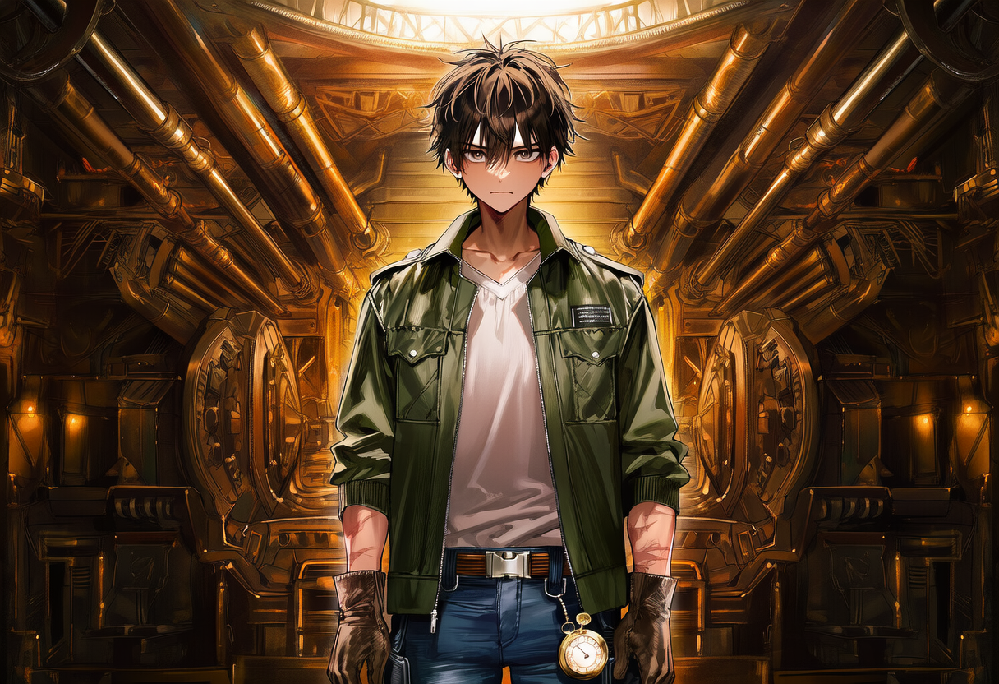
공학 전공 · 산업구역 정비 출신
산업구역의 찌든 매연을 안고 올라온 공학 전공 학생. 화상 입은 거친 손은 생계와 가족을 짊어진 그가 견뎌내야 했던 궤도 도시의 밑바닥을 보여줍니다.
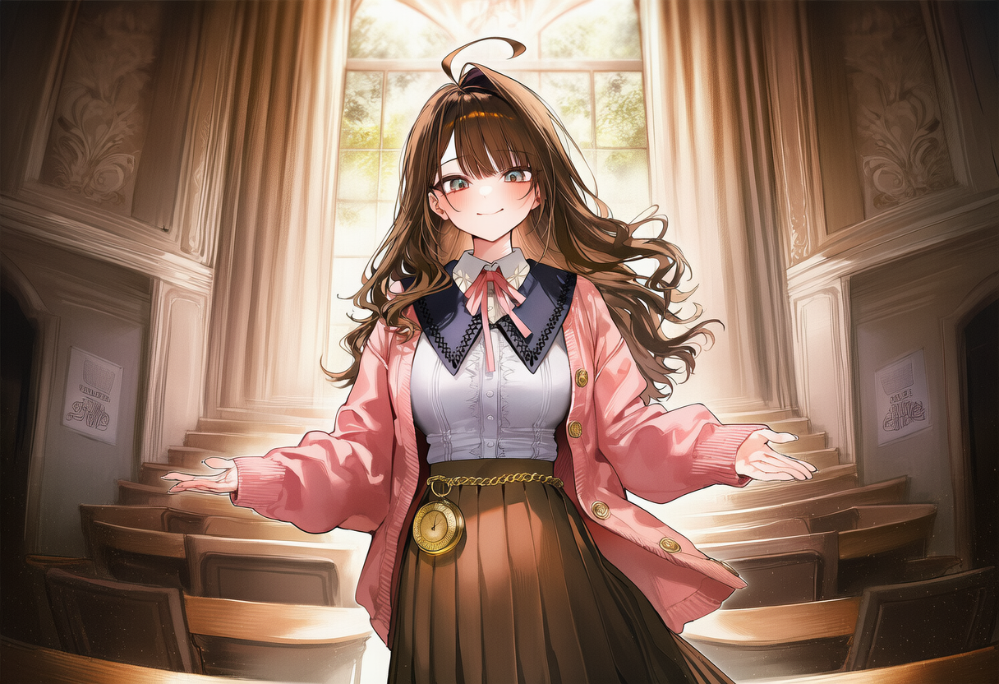
사회과학 전공 · 상담 기록 보조
타인의 찢겨진 마음을 마주하는 상담 기록 보조 학생. 들춰내고 싶지 않은 아픔은 기꺼이 묻어두는 것이 진정한 위로라 믿는 조용한 관찰자입니다.
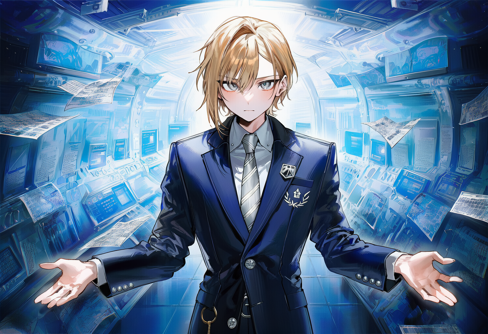
이학 전공 · 공명 데이터 분석 담당
인간의 감정과 공명마저 수치화하려는 이학 전공 학생. 변덕스러운 마음조차 계산 가능한 공식에 대입하면 상처받지 않을 거라 믿습니다.
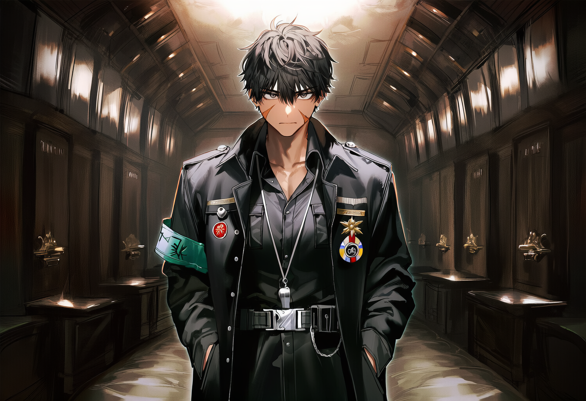
전투 교관 · 학생 후퇴 규정 담당
전장에 나서는 학생들의 등을 떠미는 교관. 헛된 영광이나 꿈보다, 어떻게든 살아서 돌아오는 내일이 훨씬 값지다고 가르칩니다.
공명 평가 연구원 · 페어 분석 담당
얇은 장갑 너머로 공명률을 차갑게 분석하는 연구원. 요동치는 감정과 불규칙한 인간성을 완벽한 데이터로 통제하려 애씁니다.
의료동 담당 · 상담 비밀 보호
규칙보다 맥박을 먼저 살피는 의료동의 안식처. 본청의 서늘한 보고 지침 속에서도, 상처 입은 아이들의 쉴 곳을 지켜내기 위해 분투합니다.
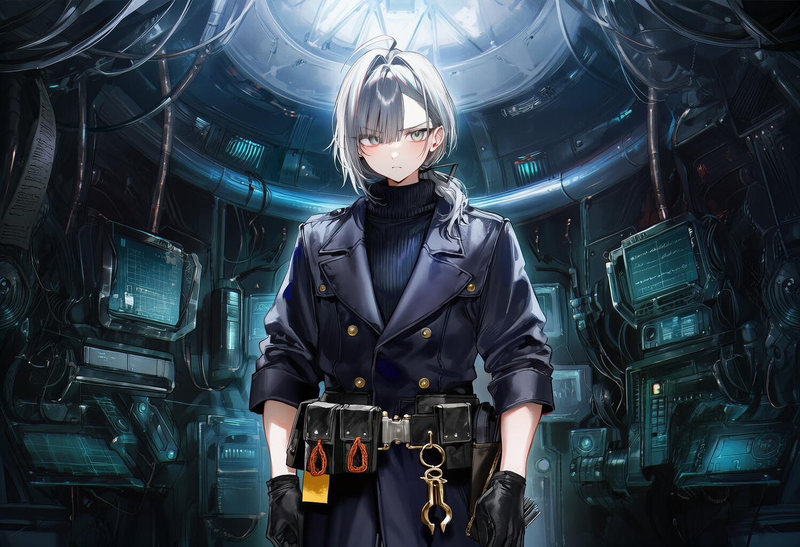
기술 관리관 · 슈테른케른 점검 담당
슈테른케른을 정비하는 고독한 기술자. 기계는 거짓말을 하지 않으나, 장치를 다루는 인간의 나약함은 언제든 참사를 부를 수 있다고 굳게 믿습니다.
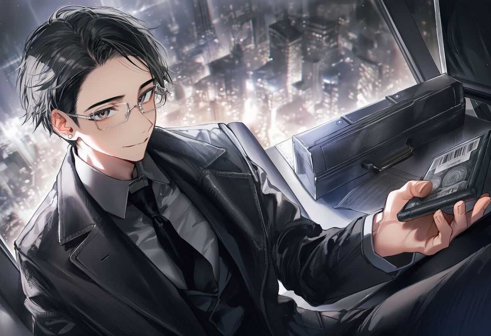
특례심사국 사무관 · 신청 심사 담당
절망적인 탄원서조차 규격에 맞지 않으면 가차 없이 반려하는 특례심사국 사무관. 예외와 온정은 결국 시스템을 붕괴시킬 뿐이라고 믿습니다.
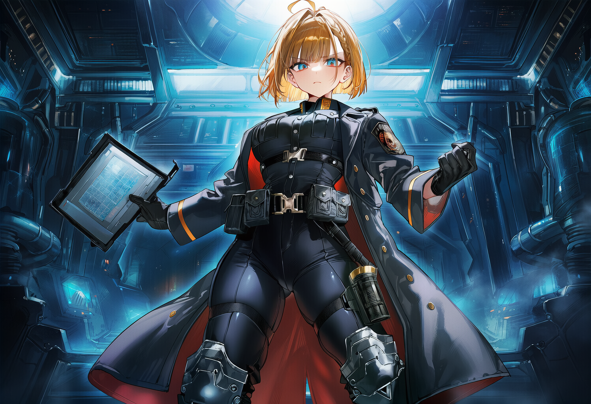
방벽군 장교 · 철수와 방위선 지휘
의수가 된 오른팔로 전장의 교훈을 증명하는 방벽군 장교. 낭만적인 영웅담 대신, 최소한의 희생으로 방위선을 유지하는 차가운 셈법을 따릅니다.
10. Glossary
아카데미 슈테른과 궤도 도시를 둘러싼 고유의 법칙과 명칭들입니다. 이 낯설고도 위태로운 세계의 질서를 이해하고, 인물들의 서사에 온전히 빠져들기 위한 길라잡이가 되어줄 것입니다.
여러 궤도로 나뉜 하늘 위 도시. 행정, 교육, 생활, 산업, 방벽 구역으로 구성된다.
반휘터가 공명하는 머리 크기의 코어 출력 중계 장치. 도시 코어 자체는 아니다.
페어가 전장과 장치에 맞춰지는 현상. 출력 안정도와 감각 공유에 영향을 준다.
전장에 직접 나서는 역할. 반휘터가 전달한 출력을 무장과 방어 형태로 받아 쓴다.
슈테른케른과 공명하는 역할. 코어 출력을 전장으로 넘기고 슈테른트레거를 보조한다.
슈테른트레거와 반휘터가 1대1로 묶인 정식 출격 페어. 공명률과 안정성 검증이 필요하다.
외계 위협 도달 전 내려오는 준비 신호. 후보 선발과 재검사가 시작된다.
생환한 학생에게 주어지는 점수. 휴가, 의료, 생활권 보호, 특별 신청에 쓰인다.
전공점을 사용해 원하는 일을 요청하는 제도. 신청 내용에 따라 심사와 반려가 따른다.
전투 과정에서 빠질 수 있는 권리. 적성자에게는 충분한 전공점과 심사가 필요하다.
공명이 안정권을 넘어선 상태. 감각 혼선, 통증 공유, 기억 역류가 발생할 수 있다.
슈테른 학생의 증표. 학생증이자 관리 체계의 표식이다.
슈테른 학생이 방벽권 전장으로 나갈 때 쓰는 전용 시설. 일반 이동 시설과 구분된다.
출격에서 살아 돌아온 학생을 위해 열리는 비공식 축하 자리.
전사자와 실종자를 기리는 야간 행사. 촛불, 명단, 묵념이 중심이다.
학기마다 열리는 대형 축제. 부스, 공연, 전공 전시, 푸드트럭이 모인다.
슈테른, 메종 뤼미에르, 아카데미아 솔라리스가 함께 여는 분기 교류 행사.
아카데미 슈테른의 시계는 평범한 학사 일정과 잔혹한 전시 상황을 동시에 가리킵니다. 일상과 생존, 그리고 공명으로 얽힌 관계들. 본 아카이브는 이 위태롭고도 찬란한 궤도 도시 속, 세계의 톱니바퀴가 되어가는 주요 인물과 시스템을 조망하기 위한 기록입니다.